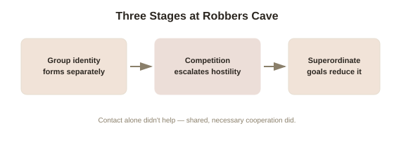

Chapter 3: The Robbers Cave Experiment and Intergroup Conflict
Chapters 1 and 2 covered what happens within a single group under the influence of other members present. This chapter turns to what happens between groups — and one of social psychology's most famous, and most ethically complicated, field experiments showed exactly how quickly and easily hostility between groups can be manufactured from almost nothing, and exactly what it actually took to undo it.
Setting up conflict from scratch
Psychologist Muzafer Sherif ran the Robbers Cave experiment in 1954, bringing 22 psychologically healthy, well-adjusted eleven-year-old boys — carefully screened to exclude any pre-existing behavioral issues — to a summer camp at Robbers Cave State Park in Oklahoma, without the boys knowing they were part of a study. Sherif split them into two groups, kept initially unaware of each other's existence, each bonding over a week of ordinary camp activities and adopting their own group names (the Eagles and the Rattlers). Once each group had developed a real internal identity and cohesion, Sherif introduced the second group and staged a series of competitive activities between them — tournaments with a real prize for the winning team. Hostility between the two groups of previously well-adjusted children escalated shockingly fast and shockingly far: name-calling, flag burning, cabin raids, food fights, and open physical confrontation, requiring staff intervention to prevent serious injury, all within about a week of sustained intergroup competition.
What this ruled out, and what it pointed toward
The speed and intensity of the conflict was the genuinely striking finding — this wasn't a study of already-troubled children or pre-existing rivalries; Sherif had deliberately selected well-adjusted boys and manufactured group identity and intergroup competition from nothing, over the course of days. This directly supported Sherif's realistic conflict theory (the view that intergroup hostility arises primarily from real or perceived competition over limited resources, rather than requiring any pre-existing prejudice, personality flaw, or deep cultural difference between the groups) — genuine hostility, including physical aggression, emerged purely from structured competition between two randomly-assigned, initially neutral groups, with no history, no pre-existing grievance, and no meaningful difference between the groups beyond the arbitrary labels and competitive structure Sherif himself had imposed.

What actually resolved the conflict — and what didn't
Sherif's most practically important finding came from what he tried next. Simply increasing contact between the two groups — shared meals, joint recreational activities — didn't reduce hostility; it often became another occasion for conflict, sometimes escalating tension rather than reducing it, since the underlying competitive frame between the groups remained intact. What actually worked was introducing superordinate goals (goals that both groups genuinely want, that require the groups to actively cooperate to achieve, and that neither group can accomplish alone) — Sherif staged a series of manufactured crises (a water supply problem affecting the whole camp, a stuck truck needing everyone's combined effort to pull free) that could only be resolved by both groups working together. Hostility decreased substantially and genuine friendships began forming across the former group lines only once real cooperative interdependence, not mere proximity or contact alone, was introduced.
Tajfel's minimal group paradigm: even less is required
Psychologist Henri Tajfel pushed the question even further in the 1970s, asking how little it actually takes to trigger in-group favoritism at all. His minimal group paradigm assigned participants to groups based on genuinely trivial, meaningless criteria — a stated preference for one abstract painter's work over another, or even an explicitly random coin flip participants knew was random — with group members never meeting each other, never competing over any real resource, and having zero actual history or interaction. Even under these minimal, transparently arbitrary conditions, participants reliably favored their own randomly-assigned group when later allocating rewards, even in tasks structured so that maximizing their own group's relative advantage over the other group cost their own group some absolute gain. This pushed Sherif's competition-based explanation further: mere categorization into a group, with no competition at all, is sufficient to trigger real in-group favoritism, suggesting group identity itself, not only competition over resources, is a distinct and independently powerful driver of intergroup bias.
What this means beyond a 1950s summer camp
Together, Sherif's and Tajfel's findings describe a genuinely uncomfortable but well-supported picture: intergroup hostility doesn't require deep-seated prejudice, meaningful cultural difference, or a real history of grievance to emerge — arbitrary categorization alone creates favoritism, and real or perceived competition over resources can escalate ordinary, healthy individuals into open conflict within days. The corresponding, more hopeful finding is equally load-bearing: contact alone doesn't reliably fix intergroup hostility once it exists, but genuine cooperative interdependence toward a shared goal both groups actually need does — a specific, actionable, and repeatedly replicated finding with direct relevance well beyond a psychology field experiment, from organizational team-building to conflict resolution between actual communities.
Try this
Ideas for noticing or testing this in your own life.
- Notice an "us versus them" dynamic in your own life (between teams at work, rival schools, sports fandoms) and check whether it originated from real competition over resources, from Tajfel-style arbitrary categorization, or some mix of both.
- If you're trying to ease tension between two groups you're part of or managing, test the superordinate goal fix directly: find one genuine shared goal that requires real cooperation, rather than simply arranging more contact between the groups.
Worth pulling on?
A few loose threads from this chapter — if any of these genuinely grab you, that's a good sign of where to go next.
- The Robbers Cave experiment's ethical questions — deceiving children into believing a manufactured crisis was real, deliberately engineering conflict — echo a broader pattern of consequential but ethically fraught mid-century social psychology. → Already in the library: Obedience, Conformity & Situational Power's chapter on research ethics covers this same era and tension directly.
- Intergroup dynamics like these play out at a much larger scale, and much faster, in anonymous digital spaces than they ever could at a physical summer camp. → The subject of the next chapter: online deindividuation and digital crowd behavior.